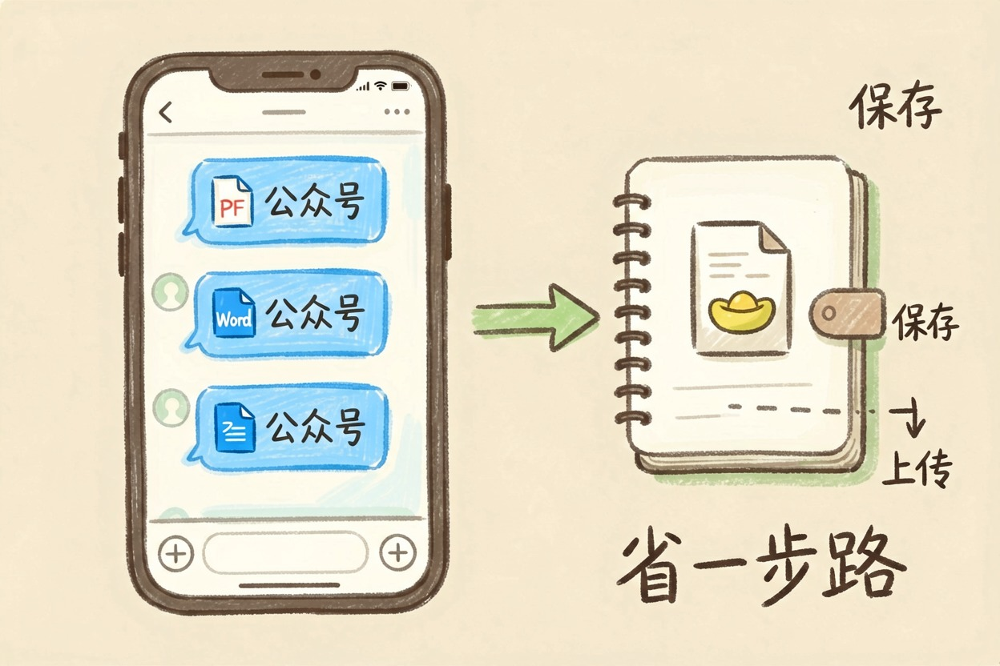
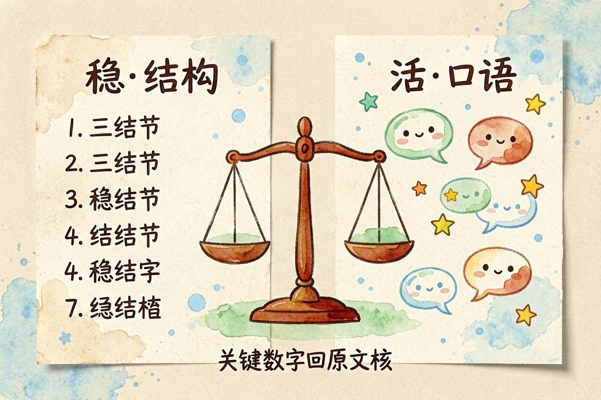
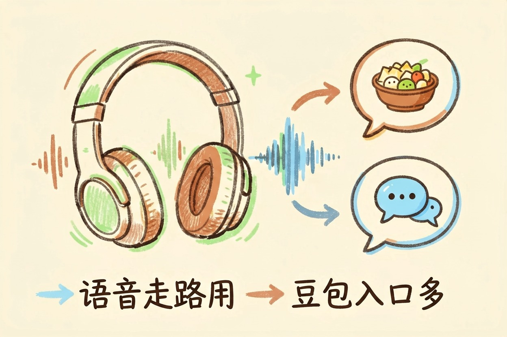
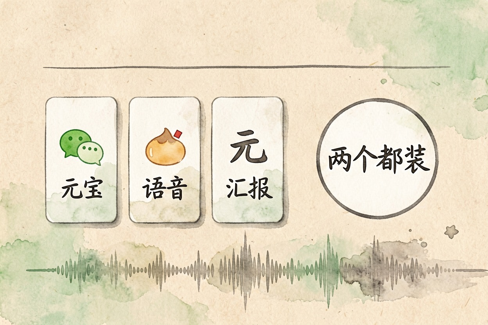

腾讯元宝和豆包哪个好用？按场景分开来看 — Learntide
两边都免费，总分咬得很紧，真正的差距藏在你每天从哪儿拿资料、成品又发去哪儿。
腾讯元宝和豆包哪个好用：先看你在哪台设备上用

腾讯元宝和豆包哪个好用，得先问你平时在哪个软件里泡着。两家都免费，都能传文件，手机端都有。比总分意义不大。
先把结论摆出来。资料多数从微信里来，元宝顺手。随手问问题、写点口语内容、爱用语音，豆包更轻快。
选型速查
文件是不是从微信收到的？ 是 → 元宝
要不要写社交平台文案？ 要 → 豆包
成品是汇报材料吗？ 是 → 元宝
常在路上用语音问？ 是 → 豆包微信生态里的资料处理

元宝最实在的优势在这一环。群里飘过来的 PDF、Word、长图，转给它就能读，不用先存电脑再上传。公众号文章丢个链接，它直接给要点。
省掉的是搬运动作。搬运看着不起眼，天天做就烦人。
豆包也能传文件，只是路径长一点：先保存，再打开应用，再上传。差的不是能力，是动线。
要是你八成资料都躺在聊天记录里，这一条基本就把答案定死了，别的维度可以往后放。
长文档和写作分工

长报告、论文、合同这类东西两边都能读，答案质量互有胜负。
元宝答得偏稳，爱分点，结构齐整，摘出来就能塞进汇报。豆包语气更活，短视频脚本、种草文案、朋友圈这类偏口语的活儿更对味。
篇幅一大，两家都会漏细节。关键数字自己回原文核一遍。
还有个小差别值得说。元宝面对表格和数字更耐心，豆包碰上密集数据容易顺着语气往下编。
改稿习惯也不同。你说「再短一点」，豆包真会砍；元宝偏保守，常改一半留一半，得多补一句要求。
日常问答、语音和移动端
日常问答是豆包的主场。响应快，语气自然，问菜谱、查说法、聊两句都不费劲。语音对话也顺，戴着耳机走路能用。
元宝查时效信息有生态内的资料兜底，找近期的事、找公众号里的说法，命中率不低。
两边入口都多。豆包在浏览器插件和桌面端更活跃，元宝和微信、QQ 打通得更深。
联网给出的结果都要留个心眼。碰上价格、政策、时间点这类信息，点开来源自己确认一遍。
免费额度个人够用，付费主要买速度和更强的模型。掏钱之前，去各自会员页扫一眼当月权益。
怎么选：两个都装最省事
同时装着，成本几乎为零。拿同一批真实问题各跑一遍，一天就分得出高下。
资料在微信里，选元宝。要口语化内容和语音陪聊，选豆包。做正式材料，元宝的结构省心。发小红书和抖音，豆包更懂那套话术。
还有一点容易被忽略：隐私。公司文件往任何一家传之前，先想清楚能不能外发。
别拿网上的跑分当选型依据，也别指望一个应用包办全部活儿。腾讯元宝和豆包哪个好用，最终看你的资料从哪来、成品发到哪去。

本文信息核对于 2026-08-08。AI 产品的价格、免费额度与功能变动频繁，实际以各工具官网当前说明为准。